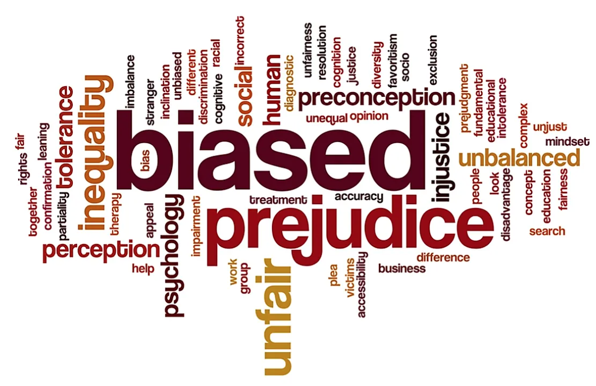

 Bias and Discrimination
AI systems can inherit and perpetuate biases present in the data they are trained on. This can lead to discriminatory outcomes or reinforce societal inequalities. Bias in AI algorithms can have significant social, ethical, and legal implications, potentially affecting areas such as hiring, lending, and law enforcement. Addressing bias and ensuring fairness in AI systems is crucial to avoid discrimination.
 Privacy and Security
Privacy and Security
AI relies on large amounts of data, which raises concerns about privacy and security. Improper handling of personal or sensitive information can result in data breaches, identity theft, or unauthorized access. AI systems may also collect and analyze user data without clear consent, raising privacy concerns. Safeguarding data and ensuring robust security measures are in place is essential to protect individuals and maintain trust.
 Job Displacement and Economic Impact
Job Displacement and Economic Impact
AI's automation capabilities can lead to job displacement and disrupt labor markets. As AI technology advances, certain tasks and jobs may become obsolete, impacting workers in various industries. This can result in economic inequality and job polarization. Adequate planning, retraining programs, and policies are needed to mitigate the negative effects and ensure a smooth transition in the workforce.
These risks associated with AI highlight the importance of ethical considerations, data privacy, fairness, and social impact. The visual representations help emphasize the potential consequences and stimulate discussions about addressing these risks.